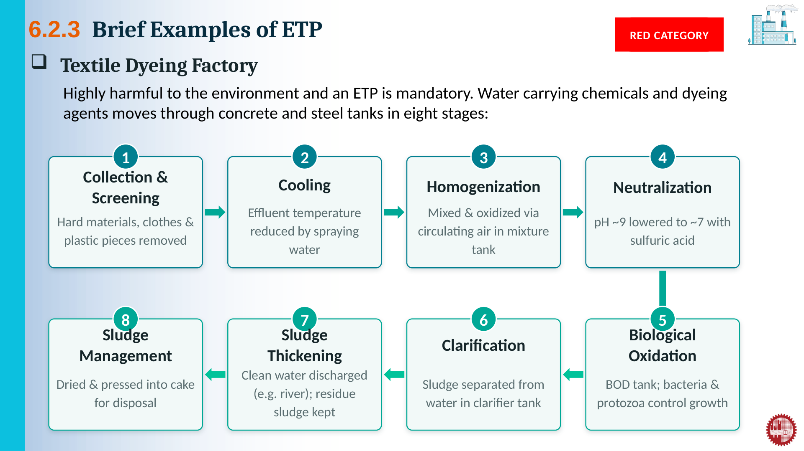
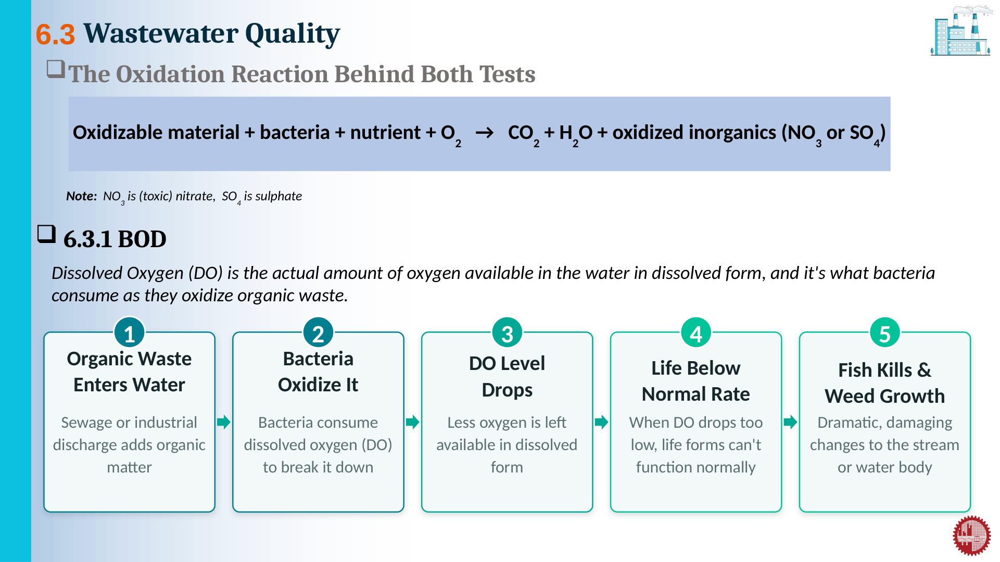
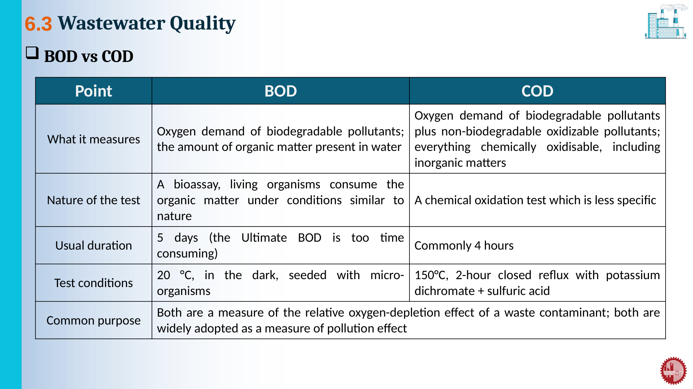

Chapter 6 covers water pollution from agricultural chemicals, industrial effluents, and oil leakages, with particular focus on Bangladesh's river contamination (Buriganga, Sitalakshya, Turag). The major exam focus is the Effluent Treatment Plant (ETP) — especially for textile dyeing — which has appeared in PYQ 7 times. BOD and COD as water quality measures are also examinable.
Water pollution is second only to air pollution in importance. It affects drinking water, agricultural water, and aquatic life. Sources include:
These rivers once supplied safe drinking water, irrigation water, and supported fish cultivation (pisciculture).
An Effluent Treatment Plant (ETP) treats the water-based waste stream generated by an industry before it is discharged to soil or nearby water reservoirs. Industries are legally required to operate ETPs to comply with environmental regulations and to reduce pollution.
| # | Step | What It Means |
|---|---|---|
| 1 | Characterize | Characterize all effluents produced on-site — know exactly what you have (pH, composition, volume, toxic substances) |
| 2 | Minimize | Implement a waste minimization program to reduce the volume and strength of effluents at the source |
| 3 | Condition in-process | Incorporate in-process conditioning and treatment where appropriate (treat waste before it becomes a large stream) |
| 4 | Segregate | Keep different waste streams separate instead of mixing them, so each can receive the treatment it specifically needs. E.g., mixing a strong acid stream with an organic stream makes both harder to treat. |
| 5 | Optimize | Continuously optimize the performance of the ETP — monitoring, adjustment, and improvement |
Textile dyeing wastewater is highly colored, alkaline (pH ~9), hot, and contains reactive dyes, sulfur compounds, surfactants, and heavy metals. It moves through 8 concrete and steel tank stages:
| # | Stage | What Happens | Key Input / Agent | Output |
|---|---|---|---|---|
| 1 | Collection & Screening | Wastewater collected in a screening tank; hard materials, cloth pieces, and plastics removed by physical screens | Physical screens/bars | Solids removed; raw effluent retained |
| 2 | Cooling | Effluent temperature reduced by spraying water over the hot wastewater stream | Spray water | Cooled alkaline water (~pH 9) |
| 3 | Homogenization | Mixed and oxidized via circulating air in a mixture tank; equalizes flow and composition | Compressed air (aeration) | Uniform, oxidized effluent |
| 4 | Neutralization | pH lowered from ~9 to ~7 by adding sulfuric acid (H₂SO₄). Essential for downstream biological treatment | Sulfuric acid (H₂SO₄) | Neutral water (pH ≈ 7) |
| 5 | Biological Oxidation | BOD tank: bacteria and protozoa break down organic matter using dissolved oxygen; microbial population controlled | Bacteria & protozoa (activated sludge) | Reduced BOD water + biological sludge |
| 6 | Clarification | Biological sludge separated from treated water in a clarifier/sedimentation tank; sludge settles to the bottom | Gravity settling (clarifier) | Clear water on top; sludge collected |
| 7 | Sludge Thickening | Clean water discharged to river or reused; residue sludge thickened for further processing | Thickener tank | Clear water discharged; concentrated sludge retained |
| 8 | Sludge Management | Sludge dried and pressed into a cake (using filter press) for final disposal or use as soil conditioner | Filter press | Sludge cake (safe for disposal/reuse) |

8-step Textile ETP: Screening → Equalization → Coagulation → Sedimentation → Biological Oxidation → Sand Filter → Sludge Thickener → Filter Press
Lead battery wastewater is acidic and contains dissolved lead, suspended solids, and oil. The ETP uses 4 stages:
| # | Stage | What Happens | Key Agent |
|---|---|---|---|
| 1 | Neutralization | Lime (Ca(OH)₂) added to neutralize the strong acidity of the wastewater. pH raised to 8–10 to precipitate lead | Lime Ca(OH)₂ |
| 2 | Sludge & SS Separation | Sedimentation, filters, and sand beds separate solid lead compounds (Pb(OH)₂); pressed into a solid cake for disposal | Sedimentation + filter press |
| 3 | Oil Removal | Oil skimmers extract oil floating on the water surface | Oil skimmers |
| 4 | Safe Discharge | Water tested for BOD/COD; if within limits, released to open field or canals | BOD/COD test |
BOD measures the amount of oxygen that bacteria consume while breaking down biodegradable organic matter in water. It tells us how much oxygen the water will "use up" as it's polluted.
| Source | BOD (mg/L) |
|---|---|
| Pristine river | < 1 |
| Moderately polluted river | 2 – 8 |
| Efficiently treated sewage (3-day) | ≈ 20 |
| Untreated sewage (USA) | ≈ 200 |
| Untreated sewage (Europe) | ≈ 600 |
| Dairy farm slurry | ≈ 8,000 |
| Silage liquor | ≈ 60,000 |
Dissolved Oxygen (DO) is the actual amount of oxygen available in water in dissolved form — it is what bacteria consume as they oxidize organic waste.

BOD₅ test: initial vs final DO measurement; DO sag curve showing oxygen depletion
Comparative BOD₅ values: pristine river (<1) through silage liquor (60,000)
COD measures the amount of oxygen required to chemically oxidize all oxidizable material in water — including both biodegradable and non-biodegradable organic compounds, plus inorganic compounds (e.g., iron, ammonia).
| Property | BOD | COD |
|---|---|---|
| Full name | Biochemical Oxygen Demand | Chemical Oxygen Demand |
| What it measures | Oxygen used by bacteria breaking down biodegradable organics | Oxygen needed to chemically oxidize all oxidizable substances (organic + inorganic) |
| Method | Biological (5 days at 20°C) | Chemical (dichromate oxidation, 2–3 hours) |
| Time required | 5 days (BOD₅) | 2–3 hours |
| Relative value | Smaller | Larger (COD ≥ BOD always) |
| Specificity | More specific (biodegradable only) | Less specific (broader) |
High-BOD loads typically come from: food-processing plants, dairy plants, canneries, distilleries, and textile industries.

BOD vs COD: measurement method, time, scope — COD always ≥ BOD
Where DO is measured in mg/L (milligrams per litre). Both measurements at 20°C, in the dark, after 5 days → called BOD₅ at 20°C.
This would indicate a moderately polluted river (2–8 mg/L range).
| Concept | Formula / Rule |
|---|---|
| COD vs BOD | COD ≥ BOD (always, because COD measures more substances) |
| BOD₅ | BOD measured after 5 days at 20°C (standard test) |
| DO critical level | At pH 5 or DO < 4 mg/L → most fish eggs fail to hatch |
| Textile ETP pH correction | Alkaline water (pH≈9) → add H₂SO₄ → neutral (pH≈7) |
| Lead battery precipitation | Pb²⁺ + 2OH⁻ → Pb(OH)₂↓ (at high pH with lime) |
A textile dyeing factory is classified as a RED category industry. Its wastewater is highly alkaline (pH ≈ 9), hot, heavily colored, and contains reactive dyes, surfactants, and heavy metals. The ETP treats this effluent in 8 stages:
This process ensures that the final effluent meets environmental standards before discharge to rivers or soil.
The five steps to effective effluent management are:
Biochemical Oxygen Demand (BOD) is the amount of dissolved oxygen consumed by bacteria when breaking down biodegradable organic matter in water at a standard temperature of 20°C over 5 days (BOD₅).
Measurement procedure:
High BOD: Indicates high organic pollution. When bacteria consume excess oxygen, the DO level drops below the threshold needed by fish and aquatic organisms, causing fish kills, weed growth, and ecological collapse. Normal river: <8 mg/L; untreated sewage: 200–600 mg/L.
Chemical Oxygen Demand (COD) is the amount of oxygen needed to chemically oxidize ALL oxidizable substances in water — both biodegradable and non-biodegradable organics, plus oxidizable inorganic compounds.
Key differences:
Both tests help determine whether industrial wastewater is safe to discharge.
A lead battery plant's wastewater contains sulfuric acid (H₂SO₄), dissolved lead compounds, solid sludge, and oil. The 4-stage ETP:
Like textile dyeing, this is a RED category process requiring full EIA approval and ECC before operation.